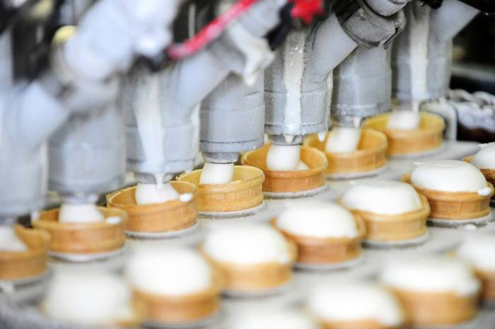
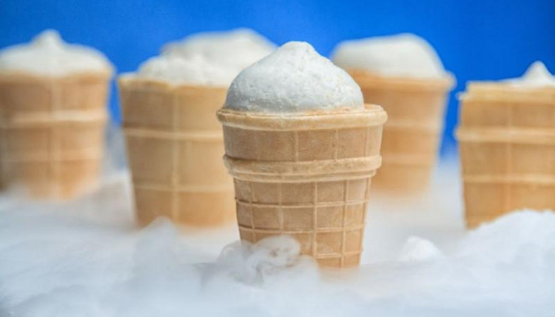

КАКОЕ РОССИЙСКОЕ МОРОЖЕНОЕ ЗАВОЕВЫВАЕТ ЗАРУБЕЖНЫЕ РЫНКИ
Старик Хоттабыч из одноименного кинофильма был в восторге от эскимо, а как аппетитно школьники едят мороженое в стаканчике в картине «По секрету всему свету»! Популярность советского, а позже и российского холодного десерта действительно распространилась по всему миру и сейчас лишь возрастает.
Благодаря поддержке российских производителей по нацпроекту «Международная кооперация и экспорт» в 2021 году наша страна серьезно увеличила поставки мороженого за рубеж. Портал национальныепроекты.рф представляет инфографику, посвященную десерту, и напоминает, что узнать больше о нем вы можете в этой статье.
Объем экспорта комбинатом мороженого в первом квартале текущего года по сравнению с тем же периодом прошлого год вырос на 50% и в натуральном, в денежном выражении, но сами объемы небольшие; отгрузки в США также выросли вдвое. "У нас в целом на экспорт приходится не более 5% тех объемов, которые мы реализуем на российском рынке. В приоритете — отечественный рынок: например, скоро предложим мороженое без сахара, с натуральными пищевыми волокнами инулина и стевии", — заключил Московцев.
Несмотря на потенциальную возможность обеспечивать весь мир мороженым, российские поставщикам пока далеко до своих иностранных конкурентов, хотя мы уверенно продвигаемся в десятку лидеров. В 2015 году мы занимали 18 место в мире по поставкам мороженого, экспортируя 1% от всего мирового объема. В 2016 году мы, почти на треть нарастив экспорт, оказались на 12 строчке рейтинга с долей экспорта в 1,2%. Фактически мы оказались примерно на одном уровне с Грецией, Литвой, Португалией и Чехией.
В начале текущего года США стали лидером среди покупателей российского мороженого. Больше всего американцы любят наше мороженое в вафельном стаканчике и «Лакомку». Об этом сообщил Федеральный центр развития экспорта продукции агропромышленного комплекса (ФГБУ «Агроэкспорт») при Минсельхозе.
Радует, что у жителей Кирова выбор мороженого гораздо больше, чем у американцев: только в вафельном стаканчике мороженого сотни видов! Классический пломбир, фруктовый, ягодный, с изюмом, с шоколадом...А еще - эскимо, мороженое в рожке и брикете!
Радует, что у жителей Кирова выбор мороженого гораздо больше, чем у американцев: только в вафельном стаканчике мороженого сотни видов! Классический пломбир, фруктовый, ягодный, с изюмом, с шоколадом...А еще - эскимо, мороженое в рожке и брикете!
Основу рецепта мороженого составляют молоко или сливки, сливочное масло, сухое молоко, сахар, вкусовые ингредиенты, стабилизаторы, все эти ингредиенты должны быть указаны на этикетке. В классическом мороженом (молочном, сливочном и пломбире) категорически запрещено использовать растительные жиры. В мороженом с заменителем молочного жира разрешено использовать такую замену, но в ограниченном количестве – не более 50 % от всей массы жира мороженого. Обращайте внимание и на жирность. Она всегда указывается в процентах и влияет на наименование мороженого: молочное (не более 7,5 %); сливочное (от 8,0 до 11,5 %); пломбир (от 12,0 до 20,0 %).